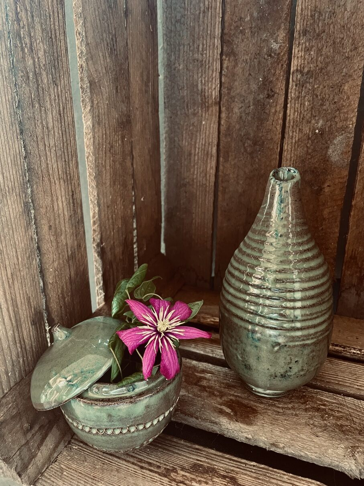
Handgemaakte keramiek.
Waar klei, creativiteit en dromen samenkomen.
Elk stuk is uniek en draagt een eigen verhaal, gevormd met aandacht voor detail en liefde voor keramiek.
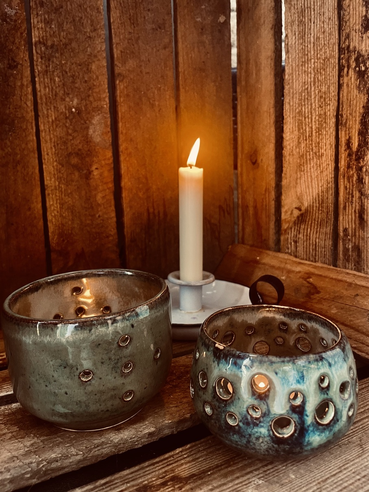
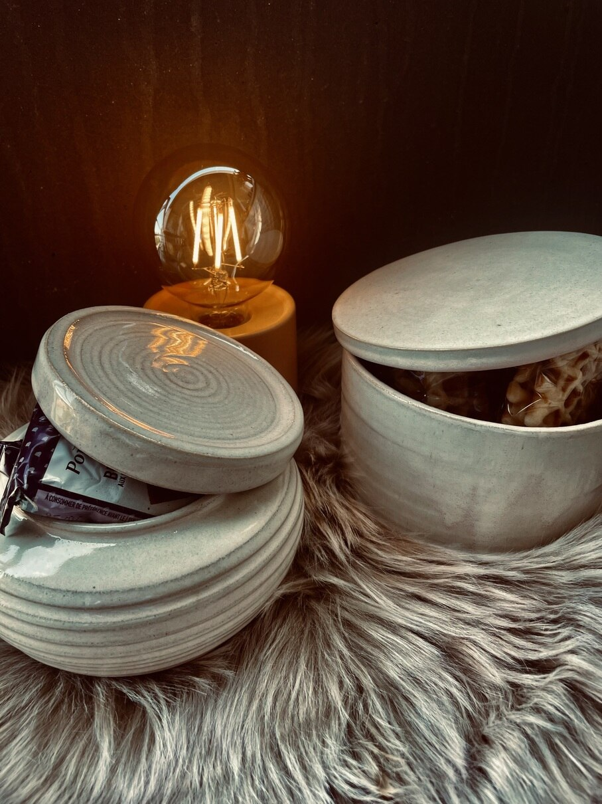
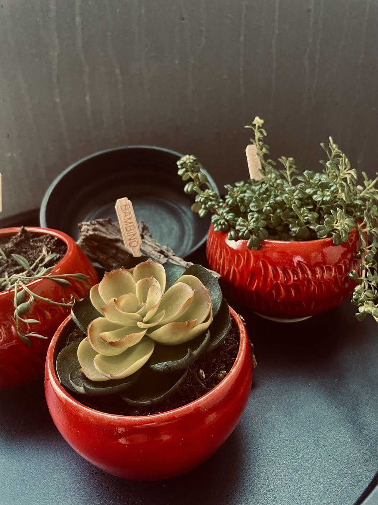
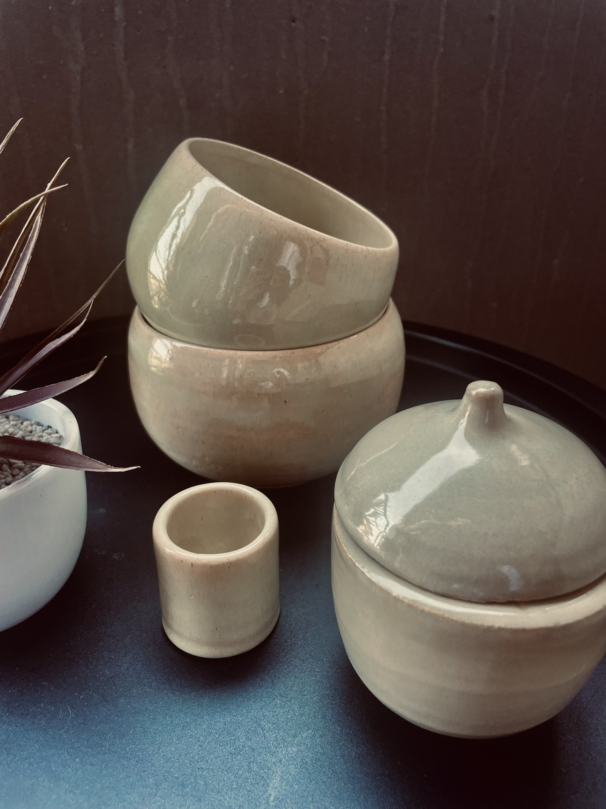
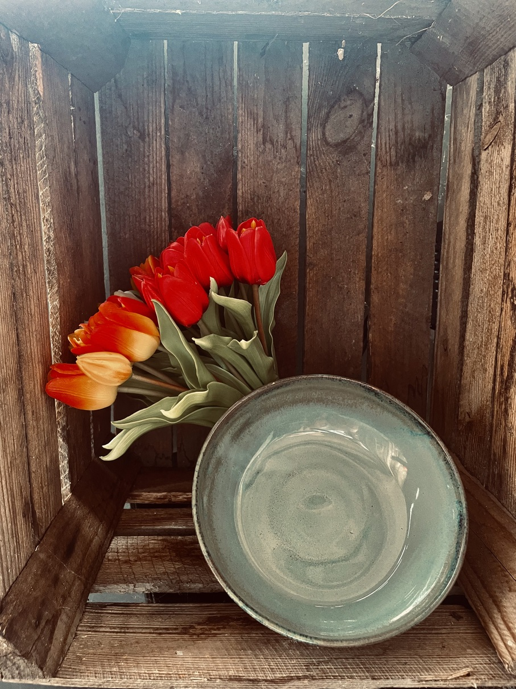
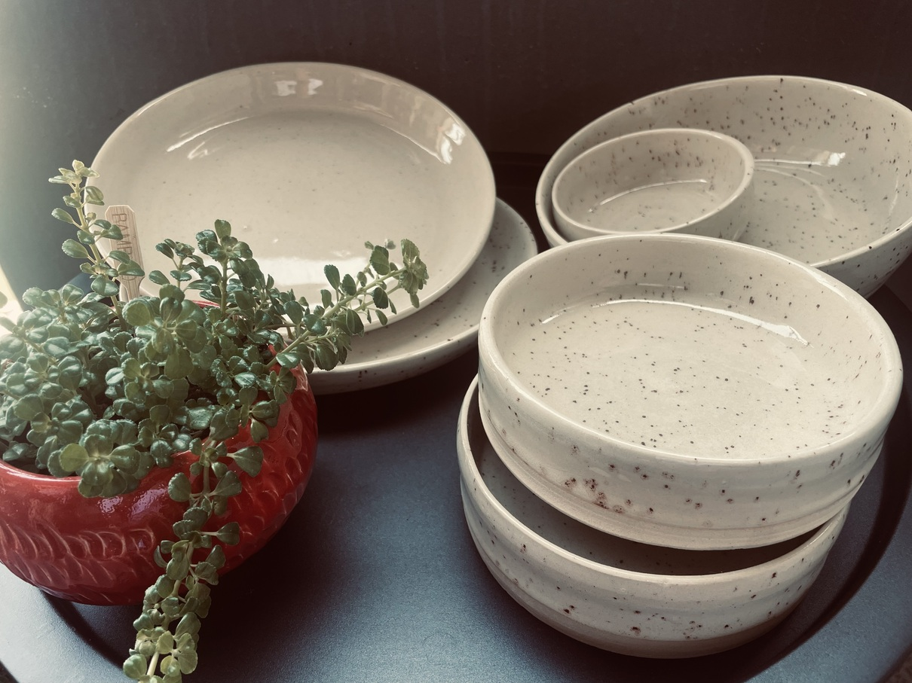
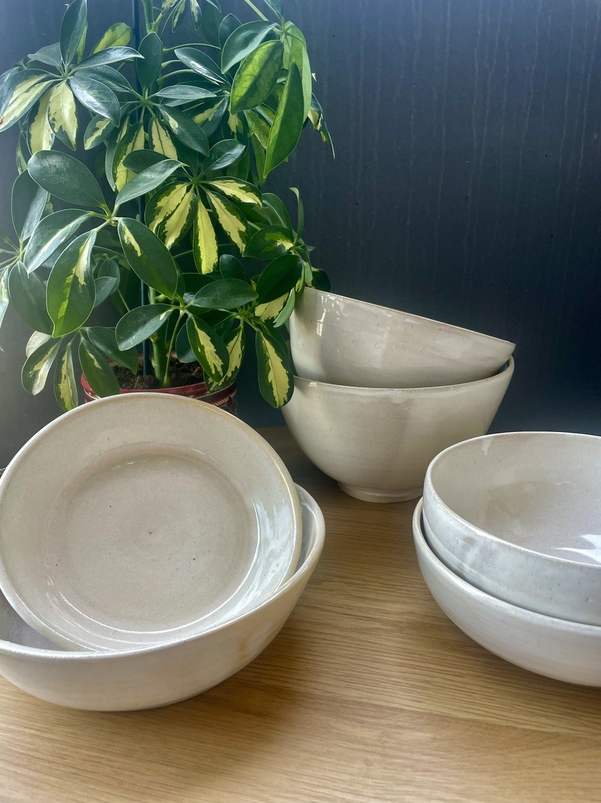
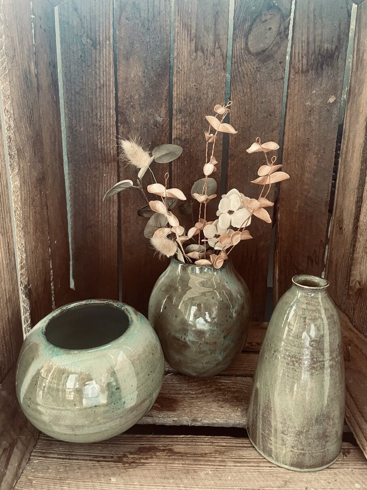
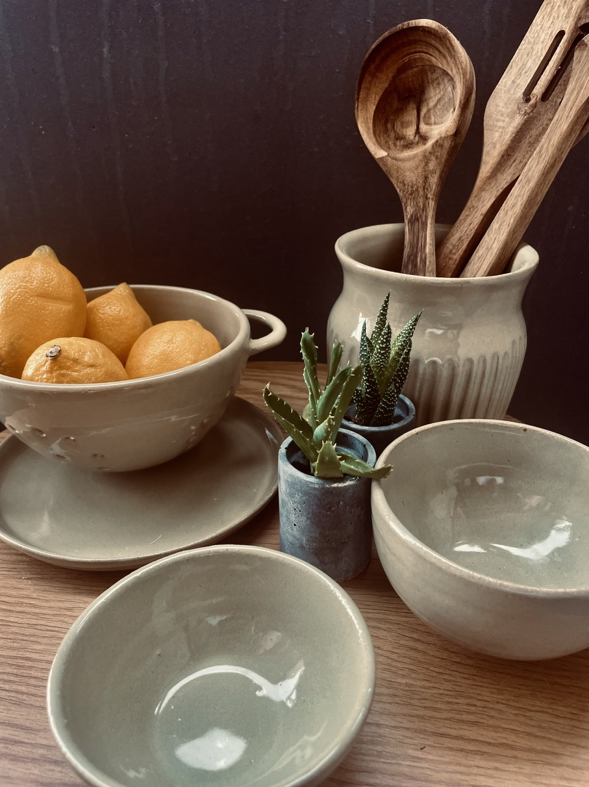
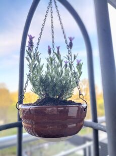
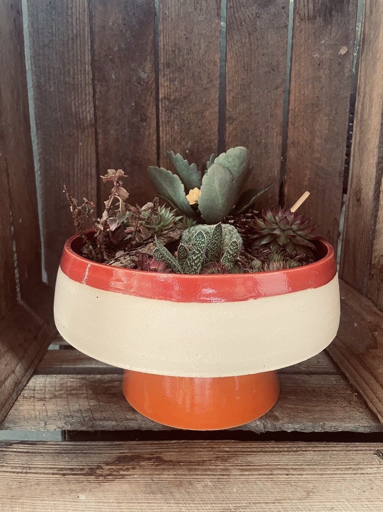
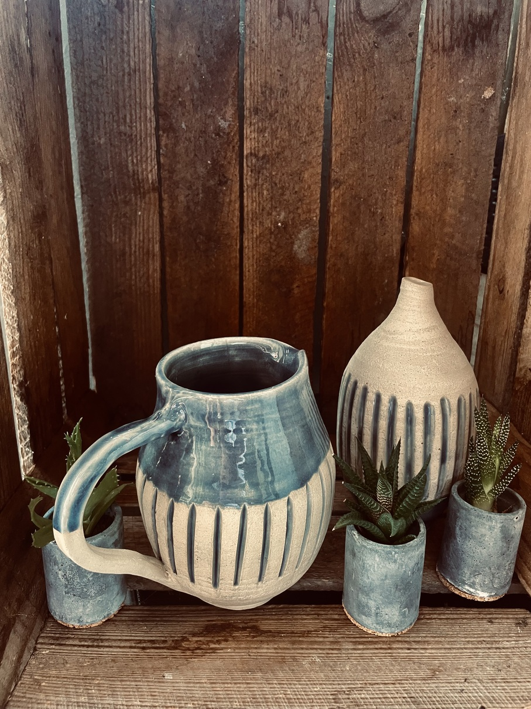
Zie je een creatie die je aanspreekt? Of heb je zelf een idee dat je graag tot leven wilt zien komen?
Neem gerust contact met me op via maisonloulin@gmail.com. Ik hoor graag van je!
Ontdek Maison LouLin op InstagramWat begon met een initiatie in keramiek, groeide langzaam uit tot een hobby die steeds meer betekenis kreeg. Vandaag is het uitgegroeid tot een passie waarin creativiteit, rust en verbinding samenkomen.
Maison LouLin staat voor keramiek met een ziel. Elk stuk krijgt aandacht en vertelt zijn eigen verhaal.
Elk verhaal begint ergens. Voor Maison LouLin begon het met een eerste kennismaking met keramiek bij Kerami, waar ik ontdekte hoeveel rust, creativiteit en voldoening er schuilt in het werken met klei.
Die eerste stap groeide uit tot een passie die vandaag verder vorm krijgt in Maison LouLin.
Mijn persoonlijke signatuur op elk uniek stuk.
Een vraag, een idee of gewoon benieuwd naar Maison LouLin? Je vindt me hier: